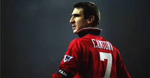

Eric Daniel Pierre Cantona (French pronunciation: [eʁik kɑ̃tona]; born 24 May 1966) is a French actor and former international footballer for the French national team. He played for Auxerre, Martigues, Marseille, Bordeaux, Montpellier, Nîmes and Leeds United before ending his career at Manchester United where he won four Premier League titles in five years and two League and FA Cup Doubles. He won the league championship in seven of his last eight full seasons as a professional. Find out more
